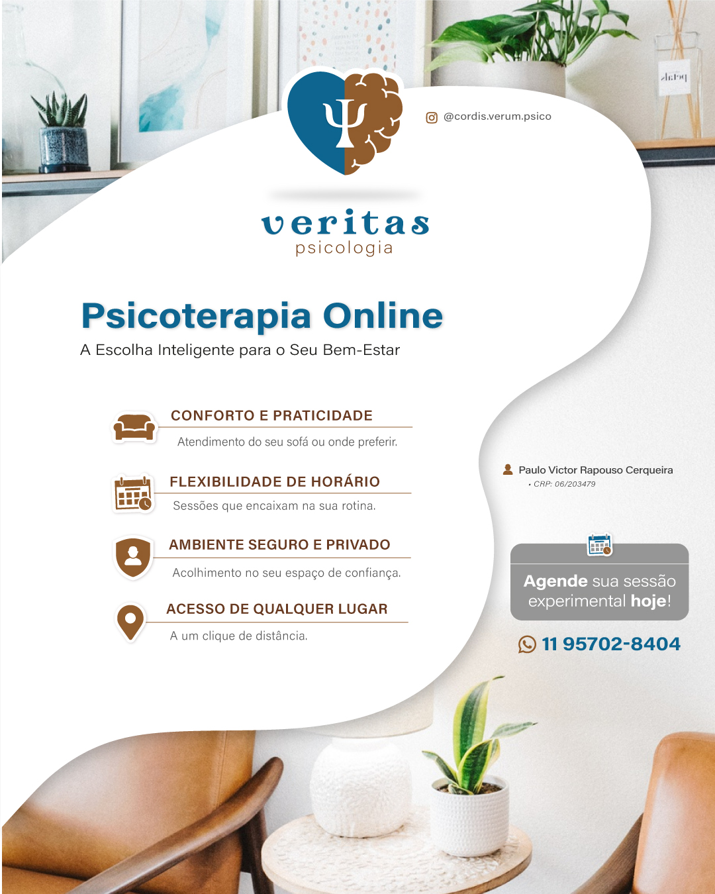

Serviço 01
Psicoterapia individual
Atendimento estruturado com escuta clínica, objetivos definidos e acompanhamento responsável.
Cuidado psicológico com direção e escuta
Atendimento para ansiedade, depressão, estresse e processos de ajustamento, com foco em psicoterapia individual e cuidado clínico consistente.
Missão
Oferecer suporte para que cada cliente encontre direção, responsabilidade e sentido no próprio processo.
50 min
Sessões semanais
Online
Brasil e exterior
Sobre
O bem-estar mental é fundamental para você amar, ser amado, servir e vencer desafios. Atendimento em ansiedade, depressão, estresse e ajustamento.
Psicólogo formado pela Anhembi-Morumbi, com abordagem principal em Psicanálise e uso complementar de Fenomenologia e Análise do Comportamento.
Cuidado em saúde mental com psicoterapia individual e em grupo, com foco no público masculino.
Oferecer escuta e suporte para ajudar o cliente a cumprir sua missão de vida.

Especialidades
Serviço 01
Atendimento estruturado com escuta clínica, objetivos definidos e acompanhamento responsável.
Serviço 02
Atendimento estruturado com escuta clínica, objetivos definidos e acompanhamento responsável.
Serviço 03
Atendimento estruturado com escuta clínica, objetivos definidos e acompanhamento responsável.
Serviço 04
Atendimento estruturado com escuta clínica, objetivos definidos e acompanhamento responsável.
Serviço 05
Atendimento estruturado com escuta clínica, objetivos definidos e acompanhamento responsável.
Serviço 06
Atendimento estruturado com escuta clínica, objetivos definidos e acompanhamento responsável.
Psicoterapia online
Para rotinas intensas, mudanças de cidade ou atendimento a brasileiros no exterior, a psicoterapia online amplia acesso sem perder profundidade clínica.
Conforto e praticidade
Atendimento do seu sofá ou do ambiente em que você se sente mais seguro.
Flexibilidade de horário
Sessões que se encaixam na rotina com mais previsibilidade.
Ambiente seguro e privado
Acolhimento em um espaço de confiança, com foco e discrição.
Acesso de qualquer lugar
Cuidado contínuo para quem mora fora ou tem rotina de deslocamento.
Depoimentos
Acolhimento e clareza
Um espaço de escuta cuidadosa para quem precisa reorganizar a vida emocional com mais clareza.
Processo consistente
Atendimento orientado por constância, responsabilidade e profundidade clínica.
Cuidado individualizado
Cada plano terapêutico respeita a história, o momento de vida e os objetivos de quem busca ajuda.
Dúvidas frequentes
Blog
Como reconhecer sinais de sobrecarga mental e buscar regulação com apoio terapêutico.
Entender o esvaziamento emocional pode ser o primeiro passo para retomar movimento.
Desempenho e saúde mental caminham juntos em contextos de exigência e competição.
Contato
Nome: Paulo Victor Rapouso Cerqueira
CRP 203479 SP
WhatsApp: (11) 95702-8404
Telefone: (11) 96714-3683
Endereço: Av. Mateus de Albuquerque, 479 - Capão Redondo - SP
Instagram: @cordis.verum.psico
Formulário